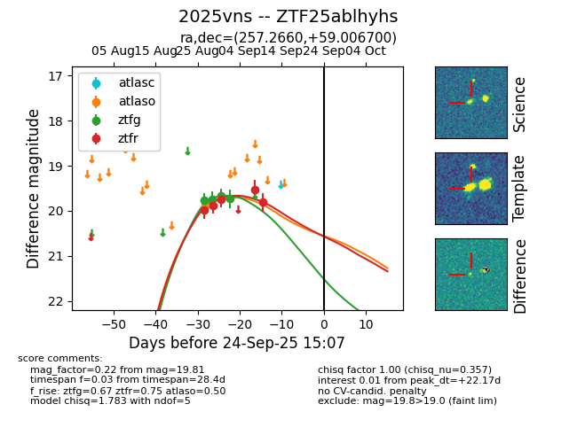
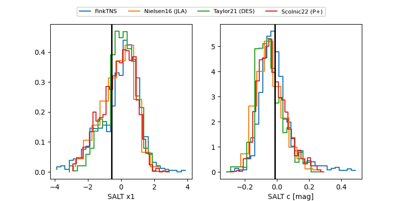

FINK: ZTF25ablhyhs
Lasair: ZTF25ablhyhs
ALeRCE: ZTF25ablhyhs
TNS: 2025vns
YSE: 2025vns
ZTF25ablhyhs (ztf,fink)
2025vns (tns,yse)
equatorial (ra, dec) = (257.2660,+59.00670)
galactic (l, b) = (87.8604,+36.07576)


last atlaso=19.89, ztfg=19.74, ztfr=19.81
1 atlaso, 4 ztfg, 5 ztfr detections